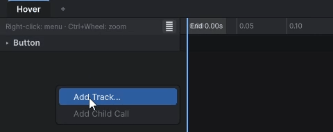
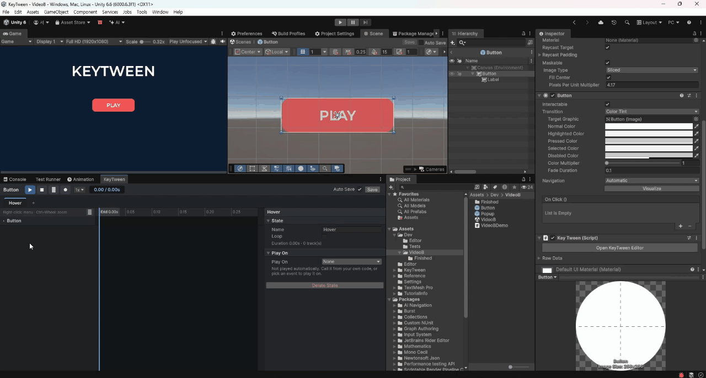

Adding Tracks
A track animates one property of one object. You choose tracks in the Add Track window and add them to the state.
Opening the Add Track Window
Right-click an empty part of the timeline and choose Add Track....

Choosing Tracks
The left side of the Add Track window shows the object tree of the prefab. The right side shows the track cards available for the selected object, along with their current values.
- Select an object in the tree on the left. You can search the tree.
- Click track cards on the right to select them. You can select several.
- Click Add N.

- Double-click a card to add it immediately.
- Your selection is kept while you move between objects.
- Tracks that already exist are marked
Added.
Defaults for New Tracks
- A new track gets a key at 0 s and a key at the state's end time. Both keys hold the current value.
- If the state is empty, the end key is placed at 0.2 s.
- Start is Current Value. Only Reveal and per-character tracks start with Key Value.
- The end key arrives with the Ease
OutSine. - A new per-character track's Stagger is 0.05 s.
For the Start option, see Track Options.
Available Tracks
The Add Track window shows only the tracks that match the components on the selected object.
Objects
| Target | Tracks |
|---|---|
| Any object | Scale, Rotation, Active |
| Objects that are not UI (Transform) | Position, World Position, World Rotation |
UI
| Target | Tracks |
|---|---|
| RectTransform | Position, Size, Anchor Min, Anchor Max, Pivot, Offset Min, Offset Max |
| CanvasGroup | Group Alpha |
| Graphic (Image, RawImage, TMP, and so on) | Color, Alpha |
| Image (Image Type = Filled) | Fill Amount |
| RawImage | UV Rect |
| Shadow, Outline | Effect Color, Effect Distance |
| RectMask2D | Softness, Padding |
| Slider | Value |
| ScrollRect | Scroll Position |
| LayoutElement | Min Size, Preferred Size, Flexible Size |
TextMeshPro
| Target | Tracks |
|---|---|
| TMP_Text | Font Size, Character Spacing, Word Spacing, Line Spacing, Reveal (Typewriter), Number (Count) |
| TMP_Text material | Outline Width, Outline Color, Face Dilate, Underlay Color |
| TMP_Text per character | Char Scale, Char Position, Char Rotation, Char Color, Char Alpha |
2D, 3D, camera and sound
| Target | Tracks |
|---|---|
| SpriteRenderer | Color, Alpha |
| Renderer (MeshRenderer and so on) | Material tracks: one per color, number and vector property of its material (e.g. Material _BaseColor) |
| Light | Light Color, Intensity, Range (Point, Spot), Spot Angle (Spot) |
| Camera | Camera Background, Camera Size, Field of View, Near Clip, Far Clip, Viewport Rect |
| AudioSource | Volume, Pitch |
Events and sounds
| Target | Tracks |
|---|---|
| Root | Animation Events, Sound |
Other tracks
- With UIEffect installed, 14 UIEffect tracks are added. For details, see Integrations.
- You can write your own track for a component of your project. For details, see Custom Tracks.
Things to know
Group Alphais for fading a whole screen or popup.RotationandWorld Rotationuse Euler angles in degrees. Values are read in the range −180 to 180, so going from −30° to 0° does not turn the long way around.Activedoes not interpolate between keys. It turns the object on or off at each key's time.- Material tracks write through a MaterialPropertyBlock. The material asset does not change, and other objects that use the same material are not affected.
- TMP material tracks make a material instance used only by that text. When the preview stops, the original material comes back.
Changing a Track's Target
To change a track's target, click the path · property ▾ button at the top of the track inspector.